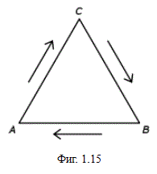

Беседа 2770 от 3877 · Беинса Дуно
Бъдете щедри
Отче наш.
Има един стих, който казва: „Родения от Бог грях не прави“.
Но още може да се каже, че родения от Бог добре се учи. Родения от Бог и добро прави. Те са взели само „грях не прави“, но какво прави родения от Бога? Запример, вие вземате ръката, но за какво са създадени ръцете? Защо са създадени ръцете на хората, само посветените знаят. Обикновеният човек знае, че има някаква ръка, но защо му е ръката и той не знае. Та в старо време, когато искали да накажат някого, който бил съвсем упорит и своенравен, не се подчинявал, отсичали му двата палци. Щом се отсекат палците, човешката воля се парализира. Когато този палец се мърда навсякъде, волята е в нормално състояние. Когато не се мърда, остане в бездействие, волята не е в нормално състояние. Та сега съвременното чувство, всички чакат наготово. Казват: „Да даде Господ!“ Да даде Господ и всички молят да им се даде нещо. Но даването е едно благо външно. Може да ти се даде нещо, но как ще използуваш онова, което ти е дадено? Подаряват ти една хубава книга, но ако ти не може да разбереш писаното вътре, или дават ти един инструмент да свириш, подарен ти е. Казваш: „Дадоха ми хубава цигулка“, или „Дадоха ми хубаво пиано“, може през целият си живот да се хвалиш, казваш: „Знаете ли колко струва? – 150 хиляди лева златни, знаете ли колко са?“
Представете си, че въздухът даром ви се дава, и вие не може да се ползувате от въздуха, и светлината даром ви се дава и от светлината не може да се ползувате. Слушането даром се дава. В съвременния живот нещата се възприемат анормално. Ако погледнете човешкото лице, в човешките вежди има нещо анормално. На някого устата изкривена, на някого веждите изкривени. При тази изкривеност не може да се върви напред. Лицето е едно място, дето се отбелязват изкривените работи. Всяка сутрин трябва да видиш какво си изкривил, да знаеш какво да направиш. Има да научиш нещо, има да изправиш нещо. Сега не искам да се занимаваме с погрешките. Но казвам, че погрешките са причина да не може да приемем новите неща, които Бог ни дава. Ние сме много закъсняли, толкоз закъсняли, че за в бъдеще трябва да пътуваме с бързината на светлината, за да може да я настигнем, към която се стремим. Много хора, като се проявяват духовно, казват: „Закъснял съм“. И действително са закъсняли. Пък и най-добрите хора и те са закъсняли. Има някой, който не е закъснял. Такива казват: „Какво трябва да се прави?“ Сега изкуството е да се увеличи бързината, да се ходи с бързината на светлината, като светкавица. Та бързината на светлината не е най-голяма, има неща, които се движат с по-голяма бързина. Мене преди години ме питаха, с каква бързина се движи човешката мисъл? Дадох им само едно сравнение, че ако се сравни бързината на светлината с бързината на човешката мисъл, то бързината на светлината е като биволска кола. Видя им се това чудно. Наскоро някой чел, че един французки математик изчислявал, че човешката мисъл се движи с три квадралиона трептения на секунда. Значи това пространство три квадралиона за да изходи това пространство, на светлината колко време ѝ е нужно? Трябва да сметнете сега, една грамадна мисъл е. Но казвам: Има обикновени работи, които не ни са ясни. Запример, всеки един от вас минава за много търпелив. Казва: „Аз съм много търпелив човек“. Гледам една сестра, която е много напреднала с търпение, една друга сестра ѝ казва една обидна дума. Гледам, тази много търпеливата сестра, сълзи ѝ потекли, два извора потекли от очите ѝ. Сега има два начина на разбиране. Не, че не е търпелива. Аз го тълкувам. Казва: „Обиди ме“. Онзи невежа, който живее в нея е обиден. И онази, реалната, която живее в нея. Трима човеци живеят едновременно. Тя плаче, как досега да не е знаела тази истина. А пък онзи, който разбира тази работа, той се радва. Ха сега едно противоречие. Казвам: Единият се докачи, вторият плаче, третият се радва. Как ще ги примирите? Невежият се обижда, реалният, той плаче, как да не е знаел досега тази истина, онзи, който разбрал, той започва да се радва. Та аз виждам едно положение – вие не знаете кога се радвате. Радва се третият, който разбрал. Като ви обидят, третият започва да се радва. Единият скърби, другият плаче, казва: „Как досега да не зная тази истина?“ Казва: „Каква хубава истина да ми кажат – ти си голям простак“. Започва да плаче, как досега не е знаел, че е голям простак. Какво разбирате вие под думата „простак“? Всеки човек, който не знае да греши, да лъже, да краде, който не знае да смета хората, е един първокачествен простак. Сега невежият ще се обиди, ще си каже: „Аз да бъда простак! Да крада мога, много учен човек съм, мога и да убия, как мисли че съм простак?“ Ами, че всички вие казвате: „Докажи му, че не си толкова глупав човек“. Че как ще му докажеш? Представете си, че вие срещнете един разярен бик, как ще му докажете, че вие сте едно благородно величие? – Отмахни се от пътя. Та ще ви приведа примера за един невежа Симеон в Елинско живее. Невежа, той една солена идея има. Един ден излиза и като изкарват от Елена говедата, върви и бикът. Като вижда тази бука, която мучи и вика, казва: „Заповядвам ти, в името на Исуса Христа да не мучиш“. Хваща буката за рогата, но като го натиснал бика едвам го спасили. Казва: „По-силен излезе от мене“. Казвам: На този бик, като го хванеш, като му извиеш врата в името на Христа, да познае, че Христос е в твоите ръце. Ако Христос не е зад тебе минаваш за хафиф. Тогава под рогата на буката. В дадения случай бикът представя невежият човек. Щом ти си невежа, ти си бик. Когато започваш да плачеш ти си във втората фаза, човек още не си станал. Когато започнеш да мислиш, ти ставаш човек. Докато си бик, само говориш. Щом ти кажат, че ти си невежа, значи учиш се да говориш. Невежите се учат да говорят. Щом напуснеш невежеството, животът трябва да стане реален, да започнеш да мислиш. Аз определям животните с ония изостанали души, които са деца. Как виждате за мене едно бърбъзънче, малкото дете, което се учи, една птичка, един славей ще станат човек, след време ще израстнат. Това е по закона на времето, вие сте понапреднали. Сега, както е казано в библията, човек е създаден най-после. Но ето аз как разсъждавам: Когато някъде ще стане някакво тържество, царят ли иде най-напред или войниците? Войниците се нареждат най-напред, царят иде после. Сега човек като дошъл, най-после, другите животни дошли преди него. Законът е обратен, че който иде най-после, той най-много знае, който иде най-напред, той най-малко знае. Който има най-големи претенции в света за учен човек, той най-малко знае, който минава за най-голям светия, той е най-малкият светия, в каквото и да е отношение, това е вярно. Мене са ми препоръчвали много хора, казват: „Намерихме, един човек много добър“. Аз другояче съдя за хората. За мене има много животни облечени в човешка форма. Като снемеш човешката форма, ще видиш, че седи едно своенравно дете, което обича само да къса листа. Някое дете като вземе една книга, започне да дере книгата, откъсне едно листо, друго листо, накъса книгата. То мисли, че е свършило нещо. Когато ви обиди един човек и ти се обидиш, не си ли ти малкото дете, което си скъсало книгата. Ти си простак, ти си голям невежа, ти не знаеш това, онова. Две сестри спорят и едната казва на другата: „Ти си голям простак, не знае нито един език“. Тази, която знае езици, ако иде да говори на френски, няма да ѝ дадат пари. Ученият човек не проси. Всеки, който проси е невежа. Остане ли човек да проси, ще ви дадат пет, десет лева ще ви похвали. Всеки, когото хвалят, той е прост човек. Засега само вземат стиха и казват: „Христос тъй казал, Христос инак казал“. Тъй писал Моцарт. Какво писал Моцарт. Трябва да се учим, туй което Моцарт казал, не се чете, то се пее. Казва: „То е поезия, музика“. Каква музика, я ми кажете? От Моцарт, какво може да ми пеете? Или, ако ви кажа първата симфония на Бетовен, какво ще правите? Казвате: „Това не се отнася до нас“. За нас ангелските песни. Казвам: Я, ми изпейте една ангелска песен. Казва: „Забравих“. Ти нищо не си слушал. Туй, което си забравил показва, че ти не знаеш, нищо не си слушал. После някой иска да покаже, че е много учен. – „Аз не мисля, но в мене има нещо, което мисли“. – Че как го знаеш? Ти не мислиш, пък знаеш, че друг мисли. Туй, което в тебе не мисли как знае, че мислиш? За да знаеш нещо ти трябва да мислиш.

Ако взема един тон и ви кажа: Това е „сол“. Но това не е „сол“, нито „ми“, нито „ре“, и „ла“ не е. Какво е? Се е нещо. Като кажа „сол“, какво е? Най-първо то е музикално. То е се музика, но трябва да се преведе. В даден случай и аз като взема един тон, моят глас не е в съгласие с всички други, които пеят. Има един човек, който е музикален, като го слушам някой път и аз се опитвам да пея правилно. А пък тогава, ако река да преведа сега неговото пеене, криво вземам тоновете, вземам тоновете, но не съм в акорд с него и следствие на това се ражда един дисонанс. Постарайте се някой път да пеете, когато сте разтревожени, сърдите се. Ни най-малко не върви. Започнете да пеете, когато сте разположени, когато имате Божествено разположение, сладко върви, отлични са думите. Човек за да може да пее той трябва да има разположение. Казвате: „Лоши работи има“. Но лошите работи са за учените хора, за децата не са лошите работи. Аз не ви препоръчвам лошите работи, понеже вие сте деца. Един ден като станете възрастни, много учени, тогава лошите работи нека дойдат, ще има с какво да се занимавате. Защото голямо богатство има в лошите работи. Защото едно пеленаче, какво ще го ползува баница, вие ще го уморите това дете с баницата. Или какво ще му дадете, една печена кокошка? Или какво ще му дадете, ябълки? Казвам: Сега вие сте се научили да гледате на въпроса лично. Считате, че туй състояние, което имате ще продължи. Вие след една година няма да бъдете такъв, какъвто сте сега. Тогава, какъв ще бъдете след една година? Запример, какви бяхте миналата година на днешния ден?
Иде една сестра и казва: „Кажи ми Учителю за мене нещо?“ Какво да ѝ кажа? Носеше ми позлатени работи. Казвам: Позлатено е това, не струва. – „Как да не струва, лъщи учителю!“ Лъщи, но като го изтриеш няма да лъщи. Какво да ти кажа? Да кажа, че е злато, значи да те излъжа. Струва 5–6 лева, но не струва колкото ти мислиш. Не мисли, че е злато. Ти казваш, че обичаш някого, позлатено е това, не е злато. Ти не го обичаш, ти си турил отгоре малко любов. Ама говори за любов. Хомеопатическа любов. Силна е тази любов, но тя е от 30-то деление, от 40-то, от 50-то, от стотно деление. Знаете какво е стотното деление от някой лек? Аз ви харесвам в това отношение, понеже вие имате голяма любов и ви поздравявам, не трябва по-голяма любов хомеопатически. Но трябва да разбирате хомеопатия. Вие с думи казвате: „Аз много ви обичам“. Дадете един алеопатически цяр. Казвате, че много обичате, пък малко давате. Това трябва да има съответствие в думите. Ще кажете, много ви обичам. Три дена сте гладували, давам ви малко трошици, казвате: „Достатъчно“. Като близне, счита че съм го нахранил. Казва: „Много те обичам“. Казвам: Много ме обичаш, малко даваш. Представете си сега ви кажа: Не ви обичам, много малко ви обичам – пък ви нахраня, дам ви баница, ябълки. Казвам: Я се нахрани, пък за любов после ще говорим. Кое е по хубаво? – Да ви кажа че ви обичам пък да ви дам само да си близнете от яденето, или да ви кажа, че не ви обичам пък да ви дам добре да се нахраните. За предпочитане е последното. Ако ви кажа, че много ви обичам, пък ви дам и много, то е нормално. Учете се сега. Да има едно съответствие между думите ви и онова, което правите. Защото ние седим на изпит, не пред хората. Хората са предметно учение. В даден случай, когато ти кажеш, че обичаш хората, ти си пред учени хора, пред хора светии, които са любили. Значи комисия седи, ти казваш: „Много те обичам“. Те те изпитват, те, пишат бележка. Ще те скъсат. Ще ти дадат един човек, който е лош, ще ти кажат: „Я го обикни, лош, първокласен вагабонтин. Ще го обичаш, каквото и да ти прави, добро ще му правиш“. Как ще му направиш добро? Като се разгневиш, скъсат те на изпита. Кажат: „Единица“. Сега минаваш за много сръчен човек, че си готов за жертва. Тогава те карат да бягаш от страх. Ти се уплашиш от едно малко страдание, хукнеш да бягаш. Даже и пророците са бягали. На Йоана му казва Господ, да иде в Ниневия, той хукна да бяга. Господ му казва: „Иди на изток“,той отива на запад.
Та казвам: Ако в сегашното състояние влезете в небето, кое ще ви препоръча? Ще цитират от Библията, какво казал Христос. Христос казва: „Донесете плодовете от семената, които аз оставих на земята“. Първите плодове ще занесете. Аз казвам: Ако аз ида в невидимия свят, какво ще нося със себе си? Няма да казвам, че съм проповядвал, то е друг въпрос, ако идете на онзи свят и занесете много плодове те ще ги опитат ще кажат: „Не са доброкачествени тези плодове, не може да ги възприемем“. Ти отиваш в оня свят, носиш една стока, те ще я опитат. Оня свят е място дето само най-хубавите работи се вземат. Ти носиш всичко, но те казват: „Не можем да купим стоката ти“. Ще вземеш стоката си и назад ще се върнеш, без да си продал нито една ябълка. Казвам: Знаете ли колко ще ви коствува всичко това? Да си върнете капитала на земята, трябва да се родиш наново, да започнеш търговия наново. Не е лесна работа. Ти казваш: „Ще умра“. Няма да умреш, ще фалираш. За мене умиралката е един фалимент. Щом умреш, значи, фалирал си. После има друго, вие сега казвате, че еди кой си се влюбил в еди кого си. Оставете се сега от тия лъжи. Оставете се сега от тая любов. Казвате: „Той се влюбил“. Че какво лошо има, ако се влюбиш? Ако се влюбил, казва: „Любовта зло не прави“. Влюбил се. Не е любов. Така не се мисли. Не се обичат тия хора. Любовта зло не прави. Аз имам това предвид, защото имам други схващания. Един човек, който обича Бога, той трябва да обича всичките хора. Този, който обича, то е тъй, той ще се научи как да обича хората. Първото нещо: Ти никога не може да се научиш да обичаш хората, ако не обичаш Бога. Може да учите каквото искате, онзи, който не обича Бога, той не може да обича хората. И да иска, то е невъзможно.
Както е невъзможно при тази светлина да узреят плодовете, тъй е невъзможно при една обикновена любов да излезе нещо добро. Може да говорим, може да четем някоя хубава книга. Ако очакваме на тази електрическа светлина да се сгреем или да узреят плодовете, това няма да го бъде. Тя може да ми направи една малка услуга, но казвам: Тази любов не е онази любов, която ще внесе новият живот. То е предисловие, един път, който отваря за новото разбиране. И вие знаете, когато сте се влюбили в някого, вас ви изпитват. Вие казвате, така сте се запалили от любов, търсите да обичате някого. То е и изпит. Влюбили сте се. То е един изпит. Любовта е да те изпитват. Като мине изпита, ще дойде любовта. Представете си, че вие обичате едного, след една, две години го разлюбите. Питам: Каква е тази любов? Сега според вас има влюбване, има и разлюбване. Има и любов, има и безлюбие.Тъй е, в какво седи любовта? Този, когото обичате да е винаги млад, този когото обичате да е винаги добър, този когото обичате да е винаги здрав, този когото обичате да говори винаги сладки думи, този когото обичате да е отличен певец, отличен поет, отличен философ. Този когото обичате всичко трябва да има, светлина, въздух, земя, той всичко трябва да бъде. Тъй разбирам аз любовта. А такъв е само Бог. Аз като съм дошъл на земята не търся да ме обичат хората. Вие най-първо търсите любовта. Аз най-после търся любовта. Аз любовта не я търся. Защо? – Казвам: Хората имат толкоз любов, колкото и аз имам. Какво ще ми кажете, аз беден и ти беден, какво ще търся да ме обичаш. Ако е въпрос за думи и аз ги имам цели кошове, много богат съм с такива архаически работи. Мога да ви дам любов на заем, колкото искате, с килограми, мога да ви дам. Вие ще кажете: „Учителят много голяма любов има“. Не, много малка е моята любов. Който е близо при мен ще рече. Като дойде някой казвам: Много малко знаеш. И аз много малко зная. Мислиш, че си млад, ти съвсем си остарял. Какви не стари идеи имате. Знаете ли какво нещо е младостта? Христос казва: „Ако не станете като малките деца не може да влезете в Царството Божие“. Ние сме деца на грехопадението, трябва да се освободите от него. Всички хора, които сега се раждат, те са все деца на грехопадението, на недоволството, на лъжата. Трябва да се освободите съвършенно от това състояние. Те и двете неща в нас вървят паралелно. Трябва да знаете къде се проявява злото, и къде се проявява доброто. Едновременно в тебе две неща вървят. От една страна ти си добър, току виж дошло нещо лошо. И мене често ме изпитват. Иде и ме изкушава дяволът. Донесат ми много хубави плодове – 4–5 плода. Иде една сестра, каже: „Дай ми един плод“. Окото ми отиде на малките плодове. Дяволът сега казва: „Дай най-малкото!“ – Не, казвам, трябва да дам най-хубавото. Не само единия, но понякога давам и трите, и за мене остава само единия, най-калпавия за себе си. То е Божественото. Като замине дяволът казва: „Какво ще разбере тя от тях?“ Казвам: Ще се подмлади. Дали тя или аз, все едно. Казва: „Тя учена няма да стане с тия плодове, ти трябва да ги изядеш, те са за тебе“. Та и вие като мене разрешавате. Понякой път казва: „Дай само малкото.“ Не, че аз съм лош в дадения случай, онзи който ме учи, той е духът на изкушението. Казва: „Ти тия камъни може ли да ги направиш на хляб? Ти от камбанарията може ли да се хвърлиш? Туй всичкото царство на земята ще ти дам, ако паднеш и ми се поклониш. Какво ще ти коствува на тебе да ти дадат всичките царства, да се поклониш?“ Ако се наведеш да му се поклониш, не че никакво царство няма да ти дадат, всичко ще изгубиш, но и живота си ще изгубиш. Ще кажеш така: „Аз съм научен прав да седя, не съм се научил да се кланям. В света има само Един. Той като дойде на него може да се поклоня, пред всички други хора прав стоя“. Питам сега вас, вие прави ли стоите или се кланяте? Кой на кого се кланя сега, кажете ми? Аз съм гледал, един казва: „Моля ти се, прости ми“ – и се кланя. Но защо се кланя на жена си? Или пък жената се кланя да ѝ прости. Не, но и да прости така не се прощава. То са криви разбирания. Я ми кажете, когато вие искате прошка, как казвате сега? Ако аз бях направил една погрешка пред вас и искам да ме извините, ще кажа: Ела с мене, аз направих една погрешка пред тебе, ти я констатира, ще идем и двамата пред Господа, ще коленичим, че Господ да каже тази работа как седи. Така може да ни се прости прегрешението. Ако някой мене ме обиди, че иска извинение, ще ида пред Господа ще кажа: „Господи извини ме, аз чух лоша дума бръмчи в моя ум. Опетних се със злото. Той ми казал лоши думи, аз съм виноват, че съм ги възприел“. Той е виноват, че ми казал тия думи. Той е виноват, че ми е продал тази стока, аз съм виноват, че съм купил да я продам на другите. Който обижда и който е обиден, и двамата са виновати. Тъй седи работата с новото учение. Щом се обидят и двамата са виновни. Единият продавач, другият препродавач. Новото учение изключва всякаква продажба. Никакво продаване, никакво купуване. Тогава щом се обиждате, тогава вие сте търговци. Този въпрос за земята остава. Дойдат при мене казват: „Кой е крив, кой е прав?“ Казвам: Идете при Господа, коленичете, аз не разрешавам въпроса. Аз не съм съдия, нямам кодекс, как ще кажа, кой е прав, кой е крив. Аз не виждам никакво зло. Неговият език се огънал, той му казал, че бил много голям простак, много лош човек. Каквото казал, той само разлюлял въздуха. Какво излезло, що казал, подвижил въздуха, дошло някакво трептение до твоето ухо, ти сега правиш своите заключения, че ти казал нещо. Не, грехът не седи в разместването на въздуха. Всяко престъпление седи в една промяна, която става в сърцето. Не е престъпление, ако взема една свещ и я духна да я угася. Само разклатя въздуха и въздуха не е виновен. Но, ако угася свещта, там е престъплението. Че аз разклащам пламъка, нищо не значи. Ако някой може да изгаси моята свещ, аз правя друго заключение. Като духна да не изгася. Ако в мене, моята любов може да изгасне от духането на хората, ако моето добро може да се събори само от духането, това не добро, то е слабо добро. Не, че не е добро, но доброто трябва да устои. Затова всеки, който духа, вас ви причинява добро. Вашето добро трябва да бъде устойчиво. Каквито и страдания да дойдат, те имат за цел да укрепят вашето добро и вашата любов. Страданията са помощник на любовта, на всички човешки добродетели. Както вятърът, който иде да разклаща дърветата, да подобри тяхното кръвообращение, така са и страданията за вас. Аз така разсъждавам за себе си. И не съм намерил никакви други церове. Каквото и да мислиш, никога не казвам, че някои неща не съм знаел. Невежия погрешки не прави. Само учените хора, които много знаят, те правят погрешки. Кой прави прегрешения? Който много говори. Който малко говори, не прави прегрешения, той минава за мъдрец. Почни да говориш и веднага ще видиш, че ще направиш някакво прегрешение. Аз понякой път като говоря, забелязвам някой граматик, който изучава българска граматика, тук свие вежди, значи някоя дума не е произнесена както трябва, някой глагол не е турен на място, някое местоимение не е турено на място, някой период не добре изказан, някой глагол не е бил в еди-кое лице, бъдеще или минало време. Ние го констатираме така. Казвам: Прав е този човек. Аз веднага му казвам: Ти си майстор в граматиката, не си невежа в смисъла на онова, което думите съдържат. Ние на български казваме: „Аз казвам“, но може да кажем и само „Казвам“. Англичаните казват само „Аз казвам“. На български има само два начина на изказване. Кой език е по-богат, българския или английския? Англичанинът като каже „Аз казвам“, прави една погрешка, българинът като каже „Аз казвам“ и „Казвам“ прави две погрешки. Казвам: По добре думите да имат едно значение. То е богатство на речта. Защото много пъти като се повтаря „аз“ не е толкова звучно. На български „аз“ не е толкова звучно. Английския е по-звучен, руското е по-звучно „Я“ и „АЙ“. Българинът казва „АЙ“, когато нещо се очуди, само в особени случаи. Той казва: „АЗ, АЗ“. Има едно съскане. Туй съскане е лошо. Когато се казва „АЗ“, чува се „С“. Българското „АЗ“ мяза на един ченгел. Като обърнеш „З“-то нагоре и „А“-то отгоре мяза на ченгел, с който българинът иска да хване нещо отдолу да го извади. „АЗ“, това е Божественото дете, което се родило да влезе в Божественото училище. Когато кажеш „АЗ“, ти трябва да знаеш, че си дошъл в света, да учиш закона на любовта, закона на мъдростта и закона на истината. Това е „АЗ“. Това е личността, това е Божественото дете. Ти ще се спреш. Ти казваш: „АЗ това, аз онова“. Ти казваш: „Аз дойдох в света да се уча, аз дойдох в света да разбера страданията, да науча мъчнотиите в света, аз дойдох да науча грехопадението, дойдох всичко туй да науча.“ – „Ама защо?“ – „Аз дойдох да науча сиромашията, аз дойдох да науча богатството, аз дойдох да науча пеенето, да науча музика, за всичко съм дошъл“. Значи за всичко дошъл и всичко това е „АЗ“. Тогава като казваш „АЗ“, ще се обърнеш към Господ, ще му благодариш, че си роден. „АЗ“ в тебе е роден. На Господа благодари. Аз съзнавам, че съм дошъл да се уча, аз съзнавам, че съм дошъл да видя всичко онова, което е създадено заради мене. И тогава на Господа ще му бъдеш признателен и за водата, и за въздуха, и за слънцето, и за мушиците, за всичко, което виждаш, то е предметно учение. Разгъваш листата, четеш написаното. Във всяко бръмчене има написано нещо. Казвате: „Какво ще ми причини една мушица вътре?“ Мене ми разправяше един мой познат една своя опитност. Един ден казва, бях крайно обезсърчен, не ми се искаше да живея, исках да си замина от тук. Отива той при морето вижда една пещера, зимно време било, влиза тоя в дупката, седи той така обезсърчен в живота. По едно време, къде се пръкна една мушица, казва, току дойде, кацна на носа ми. Казва: „Почувствах, че има някой да ме обича. Тази мушица, като че ми каза: „Ето, аз те обичам“. Тя кацна на носа, погали ме и като че ли всичката тъга и скръб, всичко от мене го снеха, просветна ми, казвам, ще живея. Ако тази мушица по студеното време дошла да ми направи услуга. Тази мушица, казва, ми причини голяма радост. Разбрах, че Бог се проявява в малките работи. Господ ми казва: Знаеш колко мушици могат да те обичат, милиарди мушици има на едно място. Аз я изпратих при тебе да те насърчи. Тази мушица дойде, погали ме по носа, казва: Господ е уредил тази работа братко, не се обезсърчавай. Качи се на носа, ходи по носа казва много деликатно. Като лазеше по носа ми беше приятно“. Вие ще кажете: „Това е илюзия“. Когато вие мислите, че сте обидени, това не е ли илюзия? Я ми кажете, какво реално има в обидата? Обиди ви, какво станало, в какво седи обидата? Как няма кой да ме обича, вие се заблуждавате. Слънцето изгрява, значи ви обича. Въздухът се движи, значи ви обича. Кучетата лаят, обичат. Петлите пеят, обичат. Всичките хора приказват, обичат. Звездите светят, обичат ви. Вие сега казвате, че никой не ви обича. Каква философия е това? Не може така да се мисли. Тогава значи де е Рождество Христово? Роденият той каза мисли. Студеното, то /е/ обич на студа. Той дошъл сега да ни види. Сега има сняг и той ни обича, дошъл в бяла дреха. Студът дошъл, казва: „Слушах за вас много работи“, хваща ни, прегръща ни. Ние треперим от студ. Студът е любовник, като хване онзи когото обича, той трепери. Ти си влюбен, но тебе те е страх от онзи в когото си влюбен, да не ти вземе живота. Тази мома, която е обичана, страх я е от момъка. Нея я е страх да не ѝ вземе живота. Понеже тя знае, че много пъти я прегръща и като я прегърне един ден, един сокол като носи една птичка в краката, я носи прегърната, отиде нанякъде.
Сега какво да ви кажа? Ще благодарите, че аз съм отворил вашите гардероби, извинете, че без позволение влизам да ви видя гардеробите и колко прах намерих. Малко съм любопитен човек. Понеже, като екскурзиант човек, дойдох да видя из гардеробите и каквото видях извадих го. Туй из гардеробите го извадих. Сега скрих едно нещо. Аз намерих само старите ви дрехи. Забелязах, че имате един гардероб, него не го отворих, там са сигурно новите дрехи. Каквото отворих само за него разправям. Аз видях само старото, но предполагам, че имате и нови дрехи. Та втори път пак ще ви изненадам, тогава ще отворя и този, хубавия, гардероб.
Сега вземам методически. Най-първо започвам с прането. След като се опере, тогава започва гладенето. Най-после трябва чистене. Та казвам: Аз изнасям тия неща, понеже тази година майката казва, да идеш да видиш тия деца из гардеробите какво имат. Всичко туй, ще им кажеш, че не може да го обличат вече. Та идната година като дойде деветте. Майката ще се грижи, какво трябва да се прави тази година. Тя казва: „Всичко туй трябва да си върви. Тази година, казва, никой да не се облича със стари дрехи и скъсани дрехи, никой да не носи стари обуща, никой да не носи скъсани шапки, скъсани връзки“. Казва: „Тази година никой да не туря медни пари в джоба, само златни. И книжни пари да не туря в джоба, никакви книжни пари, само злато. Всички медни пари и книжни пари навън!“
Я сега ние да направим едно упражнение. Всяко едно дишане е свързано със закона на любовта. Ти не може да изучаваш любовта, ако най-първо не приемеш въздуха. Не може да изучаваш и мъдростта, ако не издишаш навън. Всяка вдишка, това е любов, а издишането, това е мъдростта. Знанието – това е светлината. Като дишаш, трябва да знаеш, че от себе си светлина трябва да пращаш. Казвам сега: Ръцете настрани с длани нагоре, започнете постепенно да си свивате пръстите на ръцете. Ще хванете горните два пръста с палеца. Туй е вземане. Същевременно ще поемете въздуха. Започнете да поемате през двете ноздри. Ръцете ги свивате, в това време палците отгоре. Тогава започнете да приближавате ръцете пред гърдите със свити юмруци. Сега започвате да издишате като ръцете ги поставяте настрани, постепенно отваряте пръстите на ръцете. /Направихме няколко пъти упражнението/. Упражнението има смисъл, ако ти седиш и осмислиш нещата. Свиваш пръстите, то е интелигентност. Свиваш всичките си пръсти, че всичко онова, което Бог ти дал, поемаш го, и хубаво го поемаш. Силите на любовта поемаш хубаво. Вие всички бързате, като направите едно упражнение, искате бързи резултати да имате. Микроскопическа полза ще имате от едно упражнение. Хиляди и милиони упражнения трябва да направите за да имате един резултат. Понеже нашите ръце са свързани със съзнанието, трябва да работите. Понеже ръцете са свързани с онази страна на съзнанието, и вие не можете да преодолеете вашата мислеща страна, ако не работите с ръцете. Природата е турила ръцете да работят, очите, краката ни, всяко нещо, което се движи, събужда известна част от мозъка. Клепачите даже като се движат и те събуждат предната част на вашето чело. Ако работите без да си движите ръцете, ако вие спрете без движение ръцете, пак тогава тази дейност не е правилна. В Индия, там дето има някои да спират движението да не правят никакво упражнение, но то е закон за онези, които са работили вече. Може да има едно състояние, дето човек никакво движение не трябва да прави. Но вие още движения не сте правили. Човек трябва да научи възможността на всичките движения в света, че тогава да може да прави движения, без движението на ръцете, умствено. Тогава умствено може да прави упражненията. Аз може да правя упражненията по следният начин: Мислено протягам ръцете си, но то е другото тяло, мислено ще проточа ръцете, пак ще ги свия. Мислено може да свия ръцете, мислено може да дишам. Но по този начин на втората фаза, ако дойдете, ще може да задържите по 5 минути, по 6 минути, по 7 минути, може да дойдете до положението на 20 минути. Ако 20 минути вие може да задържите въздуха, вие сте един адепт. Но за да задържите 20 минути, знаеш колко години трябва да се упражнявате. Някой човек може да го накарате 20 минути сега да спре дишането, но той ще изгуби съзнание, ще бъде мъртъв. За да бъде съзнанието му будно, се изисква грамадна воля, разумна воля. Някой човек като го обесят, за половин час пак може да го събудят. Много хора има като ги обесят има един начин, по който могат да върнат тяхното дишане.
Та казвам: Всичките неприятности в света се дължат на онова неправилно дишане, неправилно мислене. Ние мислим по много обикновен начин. Най-първо имаме за задача всичките хора да се отнасят с нас хубаво. Аз турям закон: Аз трябва да се отнасям с всичките хора добре. При мене като дойде някой човек, аз след като му направя каквато и да е услуга, аз казвам, че много направих заради него. То е старото положение. Че какво съм направил на този човек? Аз не съм направил толкоз голямо добро, колкото Бог е направил. Направено ли е колкото Бог прави? Но казвам, че силата на едно добро, което направя, седи в моето съзнание, не в количеството. Ако ти дадеш пари някому, и ти мислиш, че малко си му дал, пък той мисли, че много си му дал, казва: „Много ми даде този човек“. Ако в този човек се роди желание, че си му дал повече отколкото му трябват, и ако ти мислиш, че малко си му дал, доброто е направено. Ако ти мислиш, че много си му дал и ако той мисли, че малко си му дал, доброто не е направено. Всякога, когато във вас е идеята, че много сте дали, доброто е заради вас. Тогава на кого е направено доброто? Казваш: „Много голямо добро му направих“. Ти да кажеш: Много малко добро направих. Христос казва: „Като извършите всичко, да кажете: много малко свърших“. Може да кажете, че аз много съм направил, но в сравнение с другите, какво сте направили. И за себе си какво съм направил например? Даже на себе си, колко пъти на ден ние се безпокоим за нищо и никакво? Седнеш, тъй спокоен, да ти е приятно. След като са те обидили, след като си сиромах, че нямаш пет пари, бос ходиш, ти да седнеш да се усмихнеш и да кажеш, колко хубави крака ми направил Господ. Дрехите ти са скъсани, дупки имат, месото ти се вижда, да кажеш, колко хубаво месце имам. Изстинали ръцете. Не е лошо да ти изстинат ръцете. Мене никога не ми идва на ум да си помилвам ръцете като изстинат, започвам да ги галя, да ги милвам. Едната ръка поглади другата ръка. Досега те сладка дума не са си казали, седят като аристократи, сега ще се сприятелят. Дойде студът казва: „Братко да живеем хубаво, как си ти?“ Като изстинат ръцете казвам: Братчета запознайте се, не се карайте, много добре си живеем, обичаме се. /Учителя си милва ръцете/. Потрият се, погреят се. За мене тия работи не са безсмислени. Аз виждам и вътрешните процеси. Като дишаме, възприемаме въздуха, казваме: „Благодаря ти Господи, каквото вземам, давам /издишам/ Сега давам.“ Като дойде студът давам по-лесно. Но научете се да бъдете щедри. Не, че не сте се научили. Бъдете щедри, както вашата майка е щедра. Бъдете щедри, както вашият баща е щедър. Бъдете щедри, както вашият брат е щедър. Бъдете щедри, както вашата сестра е щедра. Бъдете щедри, както вашите слуги са щедри. Бъдете щедри, както вашият господар е щедър. Бъдете щедри, както изворът е щедър. Бъдете щедри, както слънцето е щедро. Бъдете щедри, бъдете щедри. Навсякъде носете тази щедрост на великата Божия любов, която се излива в света, която казва: „Излейте моята любов, предайте тази любов в света, за да се прослави името Божие“.
Само светлият път на Мъдростта води към Истината!
В Истината е скрит животът!
ХVII година
15 лекция на Младежкия окултен клас
държана от Учителя на 7. I. 1938 г., петък 5 ч.с.
София – Изгрев.